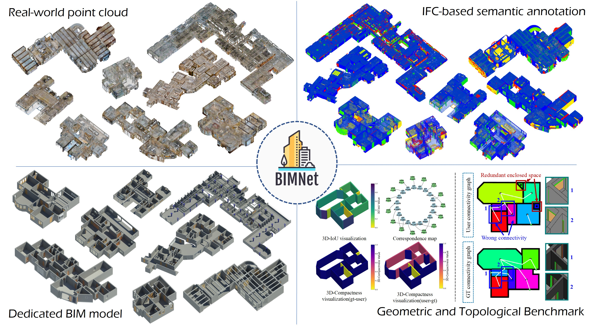
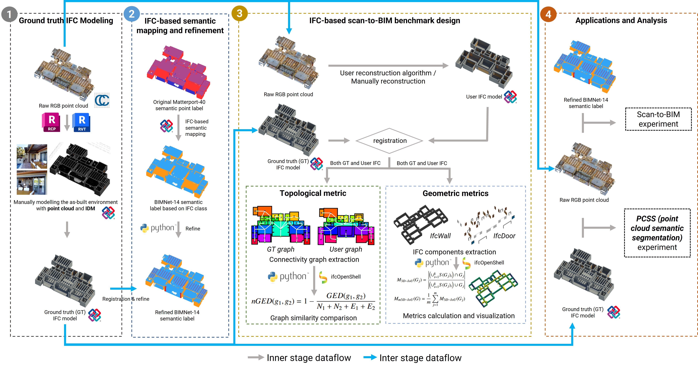
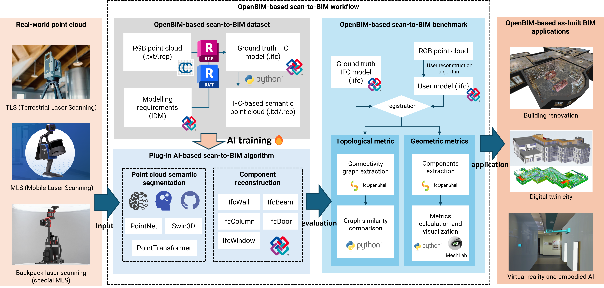

Nowadays, AI and deep learning algorithms are data-hungry, with datasets like ImageNet and ScanNet driving advancements in 2D and 3D computer vision. These open-source datasets facilitate algorithm benchmarking, collaboration, and lower entry barriers, significantly benefiting the CV(Computer Vision) community. In the AEC(Architecture, Engineering&Construction) industry, the demand for urban renewal and building digitization has made as-built BIM reconstruction a key research area. Scan-to-BIM methods increasingly use AI for enhanced performance. However, unlike CV, the scan-to-BIM field lacks large-scale, domain-specific datasets and robust benchmarks, hindering the development and evaluation of AI-driven algorithms.
Leveraging the open-source foundation, technical maturity, and standardized workflows offered by openBIM, we present BIMNet—a large-scale, domain-specific scan-to-BIM dataset and evaluation benchmark built upon IFC standards—to bridge the existing gap in the field. In total, BIMNet contains over 116.5 million points collected from 25 real-world scans, each including its corresponding IFC model. BIMNet spans more than 8,700 square meters across 382 rooms. It offers rich semantic and structural information essential for scan-to-BIM research.
Specifically, our research contributions include: (1) To the best of our knowledge, we proposed the first openBIM-based standard workflow for scan-to-BIM, with domain-specific dataset and benchmark, plug-in AI-based algorithms and standard IFC output. (2) We created an openBIM-based domain-specific dataset, with IFC-based semantic label system design and manually modeled IFC models under IDM requirements. (3) We developed a multi-dimensional evaluation framework based on IFC, in order to evaluate the geometric and topological accuracy of the reconstructed model, thereby reflecting the effectiveness of scan-to-BIM algorithms.
Aligned with openBIM principles, BIMNet emphasizes interoperability, openness, and collaboration. Through deep integration with openBIM and its toolsets, BIMNet not only provides a foundational resource for researchers to design and test scan-to-BIM methodologies but also facilitates stakeholders in comparing and selecting suitable scan-to-BIM algorithms. This integration leverages the interoperability and flexibility of openBIM standards, enhancing collaboration and innovation in the field. With strong community support, we envision BIMNet driving the AEC industry toward an AI-driven future through its scale, quality, and domain specificity.
Real-world point cloud
IFC-based semantics
Dedicated BIM model
Slide to view the data from three modalities.
If the positions of the three modalities are not synchronized, it may be because the instances have not fully loaded yet (~60MB for each instance). Please wait for a while and then switch between the instance tabs, which will prompt the synchronization of the different modalities.

Our openBIM-based BIMNet dataset and benchmark are constructed through stages 1 and 2. Stage 3 demonstrates the IFC-based scan-to-BIM benchmark design. Stage 4 involves real-world applications and analysis using the data from BIMNet.

Our openBIM-based scan-to-BIM workflow provides a platform for training and evaluating plug-in AI-based scan-to-BIM algorithms, accepting diverse point cloud sources to output versatile as-built BIMs.
You should first request access to Matterport3D dataset as our dataset is based on Matterport3D. Please fill and sign the Terms of Use agreement form and send it to matterport3d@googlegroups.com to request access to Matterport3D dataset.
If your request is approved, please send their reply email to us at thubimnet@outlook.com to get access to our dataset.
The original data from Matterport3D dataset is released under Terms of Use agreement. The part of our datset is under MIT Liscence.
Please contact us at thubimnet@outlook.com if you have any questions.
Webpage adapted from GS-SSR.
Copyright © CBIMS Research Group. All rights reserved.